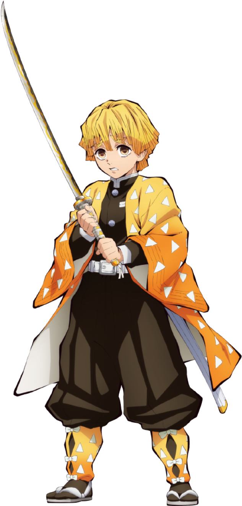

Go Back
Zenitsu Agatsuma
Breathing style: THUNDER BREATHING
Zenitsu Agatsuma is one of the main protagonists of Demon Slayer: Kimetsu no Yaiba and along with Inosuke Hashibira, a travelling companion of Tanjiro Kamado and Nezuko Kamado. He is also a Demon Slayer in the Demon Slayer Corps.